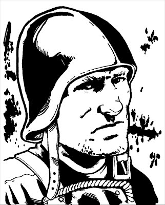

Creating A Series

Run a few games and, before you know, you will have an ongoing series, just like a comic series created by you and your players! While you can simply create and run adventures, it is often helpful to have a map of roughly where your series is going, much like the outline of an adventure's various encounters. This section looks at creating your own series and, in effect, your very own universe! The primary elements of your series to consider are its scale, setting, and style. For examples see example series. ScaleFirst, consider the scale of your series: will it focus primarily on adventures taking place in and around a single city, or will the heroes travel all around the region or the world? Will they deal more with local crime or global threats? Does the series even go beyond the boundaries of Earth, to distant solar systems, the far future, or parallel dimensions? The potential scale of a series tends to break down like this: LocalLimited to a large city like New York City or Seattle, or a particular region, like a state or small nation. Local heroes tend to focus on local issues and problems, leaving the "big picture" stuff to those better able to handle it. Some heroes particularly pride themselves on being locals; after all, sometimes focusing on the big problems makes it easy to ignore the small ones. RegionalThe series primarily takes place in a large region or country, like the United States, Canada, or Europe. The heroes might be a national team, sponsored by the government, or a branch of an international one that already exists in your setting. GlobalThe heroes travel around the world, tackling global problems and big challenges. They are likely among the most powerful and influential heroes and have comparable resources, allowing them to get to distant places quickly to respond to emergencies. The heroes have to deal with global geopolitics and they are typically the first line of defense against serious threats. UniversalAt this scale, Earth is just one small part of the vast universe, and the heroes regularly travel among the stars. This is the scale for cosmic heroes such as an interstellar police force, or for far-future teams that patrol a solar system and beyond, where it's handling a natural disaster on one planet, quickly followed by an invasion of another world in a different star system. Some form of Space Travel (see Movement) is required at this scale. MultiversalEarth? Which Earth? A multiversal series spans diverse universes and dimensions, from parallel worlds to mystic realms and realities almost defying description. This sort of game requires the Gamemaster to define the game world or multiverse, but a good setting can result in a very memorable series. Some form of Dimensional Travel (see Movement) is required at this scale. The smaller the scale, the more detail you can put into your series. It is easier for players to get to know one city or region especially well than it is for a series that takes them to a new planet or dimension every adventure. Larger scale series, on the other hand, tend to be grander. There is a majesty to the vastness of space or an infinity of other realities that's hard to match. Similarly, the wider scale opens up larger potential threats. You can destroy entire worlds at these levels to demonstrate what the heroes are up against, whereas such a threat would wipe out an entire smaller scale setting. SettingThe setting is where and when the series takes place. Is it the modern-day, medieval times, the wild west, or the far future solar system? Each of the following settings has its positives and negatives, and each is suited to particular types of games. ModernMost of the time, a series is set in a version of our modern world. This approach is the easiest one by far, since there isn't as much you have to make up. You don't have to explain to your players where New York City is, for example. If your game is set in the modern-day world, you may want to choose a particular city or area as the heroes' home base. Even a truly global team needs some place to call home, such as an orbiting satellite or the top floors of a skyscraper. A fun option can be to use your home city (or one nearby) as the setting for your series. It offers a familiar locale along with the fun of having superheroes and villains duke it out around your local landmarks! Many comics and series feature heroes that live in fictional cities, places that don't exist in the real world but are often remarkably similar to various real world cities. You can do something similar in your own series, perhaps based on the place where you live. Of course, your modern setting is not necessarily the modern universe: with parallel Earths, yours could be like the real world, but with whatever changes you want. HistoricalThe Golden Age of comics began in the 1930s and this game can easily be set any time in the past seventy-five years. Players can take the roles of "mystery men" and the first superheroes, fighting against gangsters and the forces of the Axis in World War II. They can be government agents or patriotic heroes during the Cold War with Russia, or counter-culture rebels during the 1960s. But nothing says you can't go farther back in history if you want. Comic books have told stories about heroes from nearly every time period. There's World War I and the American Revolutionary War. The Wild West offers cowboy heroes, Native American shaman, and steam-tech weird science. Medieval heroes could face evil wizards, goblins, and monsters. You can go all the way back to the mythic ages of ancient Greece and Egypt with gods and heroes as potential characters, or even the chronicles of ancient Atlantis. FuturisticMore than a few comic books speculate about the future. There are science fiction comics aplenty, along with super-hero stories set at different points in Earth's future. A near future setting may be quite similar to the modern-day, with the addition of some new technology and the new problems that come with it. For example there may be flying cars, cybernetic and genetic modifications, and advances in computer technology along with increases in crime and urban decay. Heroes can stalk the streets of dark, towering cities trying to protect the innocent where a corrupt legal system has failed. Some future comic stories are set following a terrible catastrophe that has all but destroyed civilization. In a setting like this the heroes may be the last survivors of ordinary humanity, or super-powered mutants, trained super-soldiers (perhaps intended as weapons in the Last War), or even cyborgs or aliens. Their adventures tend to revolve around protecting pockets of civilization from marauding mutants and keeping ambitious warlords from conquering the world or destroying innocent people. Far future settings feature faster-than-light space travel, allowing heroes to visit (or come from) any of dozens or even hundreds of different worlds. A team made up of heroes from these different worlds could band together to protect the interstellar government from hostile alien invaders while also dealing with disasters, space pirates, and criminal cartels. Or a group can explore the unknown reaches of space on board a starship, encountering would-be conquerors, despots, raiders, and other villains along the way. StyleJust as comics themselves span the stylistic gamut from lighthearted adventure to intricately plotted, grim morality plays, so can a series vary in style. Once a style of play is established, it's up to the GM to maintain it. That means creating adventures and encounters suited to that style and encouraging the players to get into the style's mindset and run their characters accordingly. Styles run along a spectrum from light to dark: LightThe light style is simple and straightforward. The heroes are the good guys and the villains are usually bad through and through (with a few misunderstood souls in need of help). Problem solving is a matter of either combat or clever thinking, and roleplaying is an opportunity for players to deliver moralistic speeches and clever catchphrases or exchange witty banter with the villains and each other. A light style is one where reality is largely what you make of it. Light stories tend to be full of fantastic characters and ideas. Heroes might face an alien invasion from another dimension one adventure and explore a lost world full of dinosaurs and cavemen the next. Realism isn't as important as telling a fun and exciting story. On the other hand, the lighter comics were often inconsistent and sometimes veered off into the extremely fantastic or even silly. GMs may want to rein-in some of the wilder elements of the light style in their games. Or they may not. DarkThe dark style presents opportunities for greater depth and realism. The dividing line between heroes and villains is blurred, and may be practically nonexistent. The players have greater responsibility for deciding their characters' actions and may have a greater impact on the world. Heroes are often faced with intense moral dilemmas and conflicts, such as supporting a corrupt government that provides order and stability against the rebels who would bring it down, or going outside the law to deal with vile criminals the justice system can't reach. The dark style allows players considerable freedom, since the heroes could, and often do, use any means available to accomplish their goals. On the other hand, it's often difficult to distinguish the heroes from the villains in this play style, since both use similar cynical or even bloodthirsty methods. The authorities are less likely to trust dark heroes, unless they happen to be working as a "black ops" or enforcement arm of a government agency. Even then there's considerable distrust of anyone in a costume or displaying powers, since bystanders often take the brunt of conflict between the heroes and their opponents. GrayscaleFinally, your game's style may be somewhere in between the two extremes. You may go for a mostly light style with a slightly modern "edge" to it, a dark style that doesn't get quite so grim but holds on to some light values, tempered with realism and an air of danger, or any other combo you can imagine. Comics have experimented with a lot of different styles over the years and you can draw upon any of them for your own series, or create your own unique style. Whatever you choose, try to make the style of your series clear to the players so they know what to expect in advance and can create heroes suited to the game. A grim vigilante who kills opponents in cold blood may not be suited to a mostly light game. Likewise, a heroic "Boy Scout" may look ridiculous in a dark game of grim and gritty realism. If you feel a particular player's concept isn't suited for your game's style, you're better off telling the player in advance and asking for a different character than having trouble later on when it turns out the player isn't enjoying the game. |